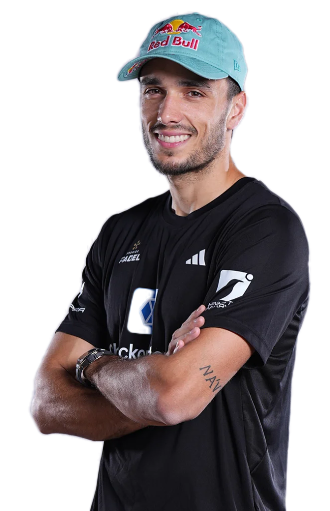

ALEJANDRO GALAN
Alejandro Galán Romo, meglio conosciuto come Ale Galán (Madrid, 15 maggio 1996), è un giocatore spagnolo professionista di padel.
Attualmente occupa il terzo posto nella classifica FIP e Premier Padel, in coppia con Federico Chingotto.

Alejandro ha vinto 51 trofei🏆 di cui 4 major e 7 P1,dopo aver cambiato compagno nel 2024 ha iniziato a vincere meno trofei principalmente per colpa del suo compagno nuovo